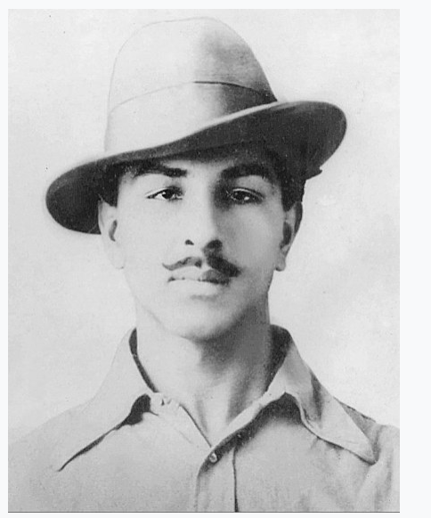

About Bhagat Singh |
|
|---|---|
| Bhagat Singh (27 September 1907[a] – 23 March 1931) was a charismatic Indian revolutionary who participated in the mistaken murder of a junior British police officer in what was to be retaliation for the death of an Indian nationalist. He later took part in a largely symbolic bombing of the Central Legislative Assembly in Delhi and a hunger strike in jail, which—on the back of sympathetic coverage in Indian-owned newspapers—turned him into a household name in the Punjab region, and after his execution at age 23 into a martyr and folk hero in Northern India. Borrowing ideas from Bolshevism and anarchism,he electrified a growing militancy in India in the 1930s, and prompted urgent introspection within the Indian National Congress's nonviolent but eventually successful campaign for India's independence. In December 1928, Bhagat Singh and an associate, Shivaram Rajguru, both members of a small revolutionary group, the Hindustan Socialist Republican Association (also Army, or HSRA), shot dead a 21-year-old British police officer, John Saunders, in Lahore, Punjab, in what is today Pakistan, mistaking Saunders, who was still on probation, for the British senior police superintendent, James Scott, whom they had intended to assassinate.[16] They held Scott responsible for the death of a popular Indian nationalist leader Lala Lajpat Rai for having ordered a lathi (baton) charge in which Rai was injured and two weeks thereafter died of a heart attack. As Saunders exited a police station on a motorcycle, he was felled by a single bullet fired from across the street by Rajguru, a marksman. As he lay injured, he was shot at close range several times by Singh, the postmortem report showing eight bullet wounds. Another associate of Singh, Chandra Shekhar Azad, shot dead an Indian police head constable, Channan Singh, who attempted to give chase as Singh and Rajguru fled After having escaped, Bhagat Singh and his associates used pseudonyms to publicly announce avenging Lajpat Rai's death, putting up prepared posters that they had altered to show John Saunders as their intended target instead of James Scott. Singh was thereafter on the run for many months, and no convictions resulted at the time. Surfacing again in April 1929, he and another associate, Batukeshwar Dutt, set off two low-intensity homemade bombs among some unoccupied benches of the Central Legislative Assembly in Delhi. They showered leaflets from the gallery on the legislators below, shouted slogans, and allowed the authorities to arrest them.[20] The arrest, and the resulting publicity, brought to light Singh's complicity in the John Saunders case. Awaiting trial, Singh gained public sympathy after he joined fellow defendant Jatin Das in a hunger strike, demanding better prison conditions for Indian prisoners, the strike ending in Das's death from starvation in September 1929. Bhagat Singh was convicted of the murder of John Saunders and Channan Singh, and hanged in March 1931, aged 23. He became a popular folk hero after his death. Jawaharlal Nehru wrote about him: "Bhagat Singh did not become popular because of his act of terrorism but because he seemed to vindicate, for the moment, the honour of Lala Lajpat Rai, and through him of the nation. He became a symbol; the act was forgotten, the symbol remained, and within a few months each town and village of the Punjab, and to a lesser extent in the rest of northern India, resounded with his name." In still later years, Singh, an atheist and socialist in adulthood, won admirers in India from among a political spectrum that included both communists and right-wing Hindu nationalists. Although many of Singh's associates, as well as many Indian anti-colonial revolutionaries, were also involved in daring acts and were either executed or died violent deaths, few came to be lionised in popular art and literature as did Singh, who is sometimes referred to as the Shaheed-e-Azam ("Great martyr" in Urdu and Punjabi). |
 |